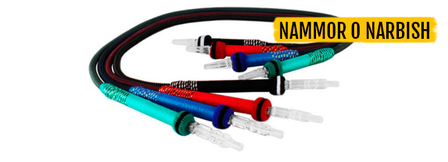
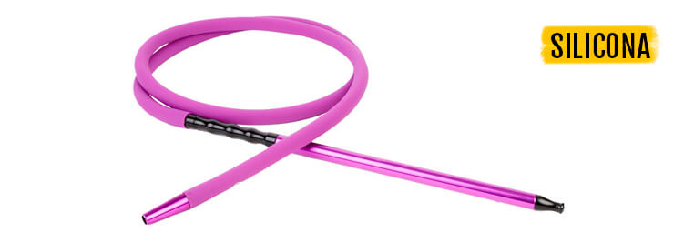
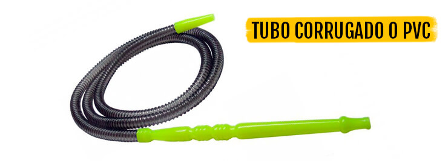
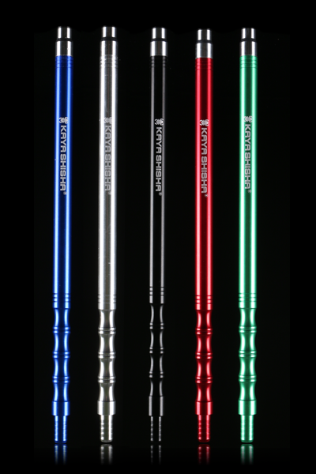
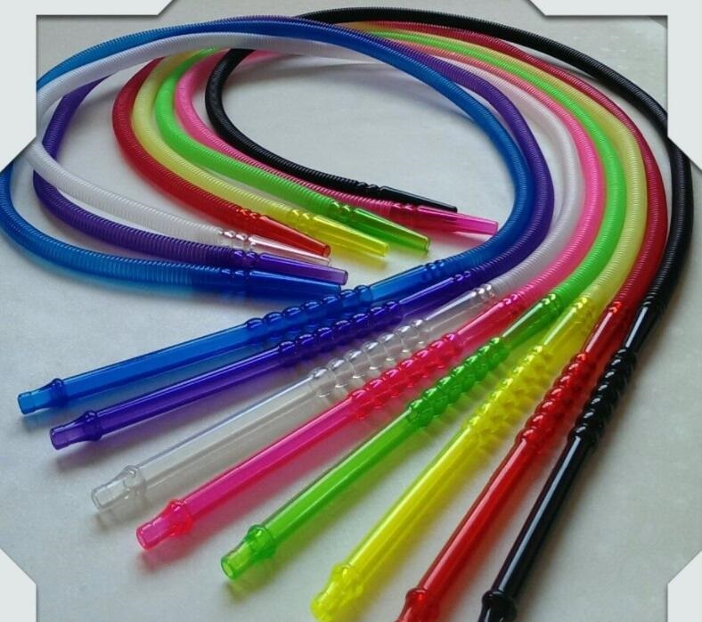
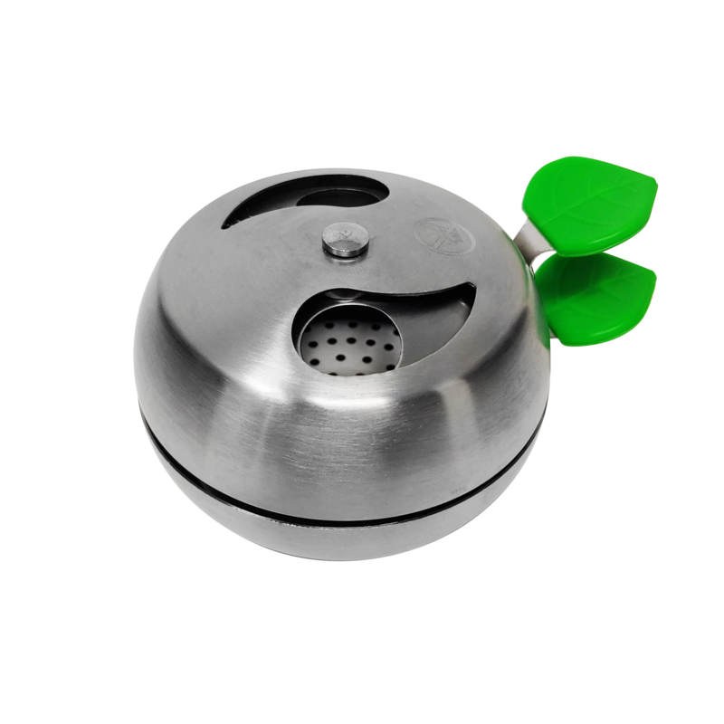
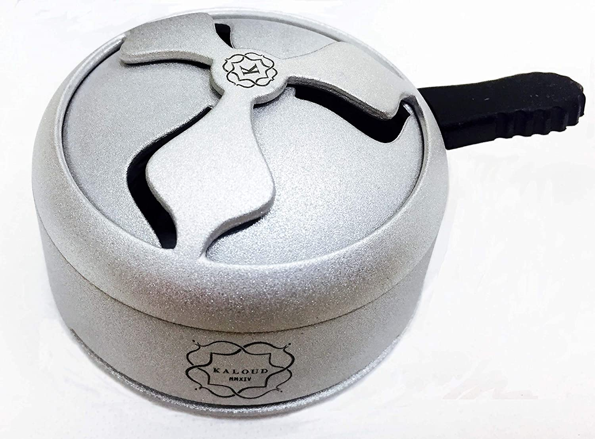
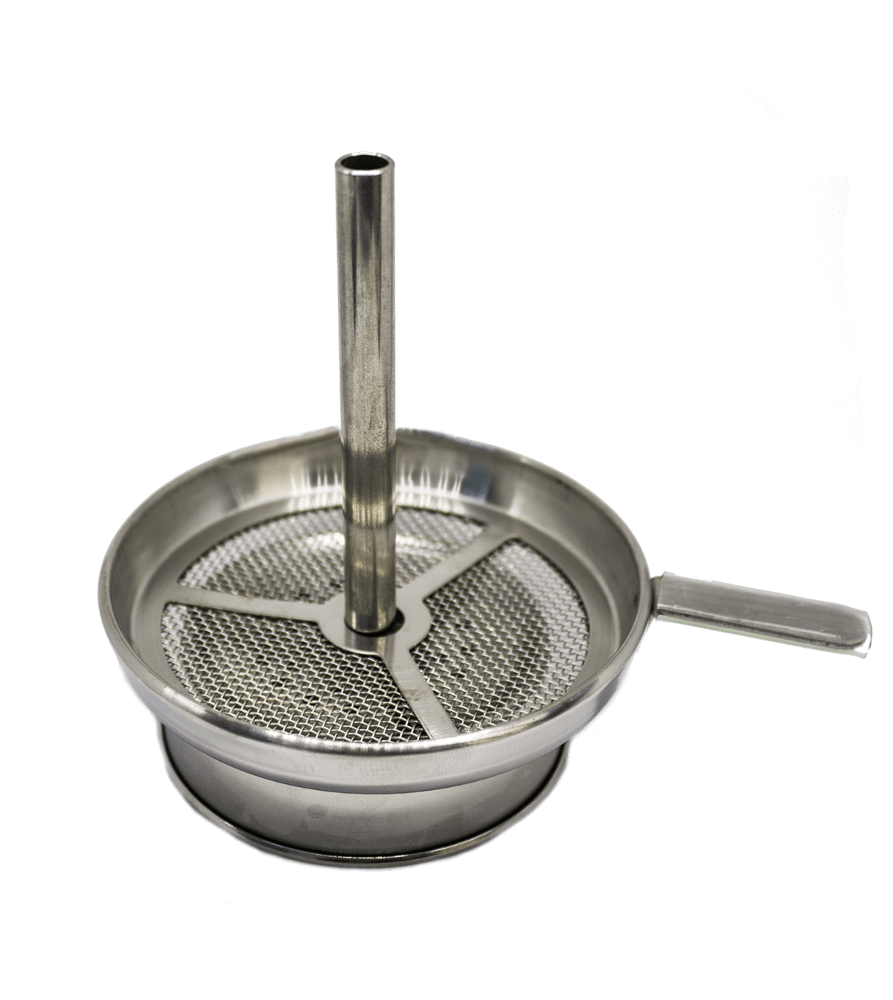
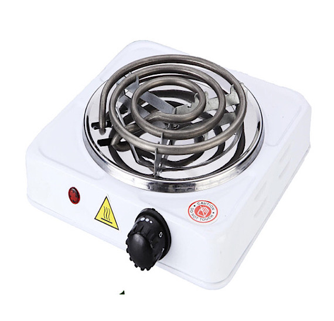
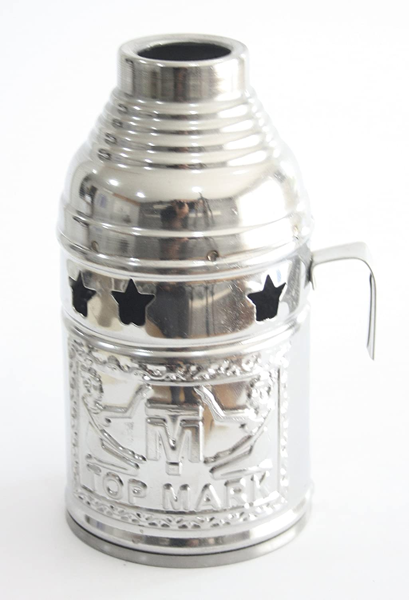

MANGUERAS Y BOQUILLAS
Dentro de los tipos de manguera podemos diferenciarlas entre lavables y no lavables. Las nos lavables generalmente pertenecen a cachimbas de tipo tradicional siendo mangueras Egipcias,Turcas o Sirias como se muestra a continuación.
Por otro lado tenemos las lavables que son aquellas formadas principalmente por materiales plásticos o de silicona como se puede apreciar a continuación. Siendo éstas las más comunes actualmente por el tipo de cachimba moderna a la que van asociadas. Podemos apreciar los 3 tipos más comunes siendo: Nammor/Narbish, Silicona o PVC. Debido a la situacion actual de pandemia que estamos sufriendo este año 2020 ésta última va a ser la mas usada debido a su bajo precio ya que los locales y demas establecimientos deberán comprar mangueras desechables para sus locales.
  Por último tenemos las boquillas que son necesarias para poder fumar en cualquier cachimba,ya que es por donde cogeremos el aire a la hora de fumar. Éstas podemos encontrarlas de diferentes tipos de plasticos o metales como el aluminio.
 GESTORES DE CALOR
Los gestores de calor se usan para regular la temperatura del tabaco en la cazoleta. En su forma tradicional los carbones van sobre la cazoleta encima del papel de aluminio o una plancha de aluminio fina. Actualmente existen diferentes tipos de gestores los cuales ayudan a no quemar el tabaco de golpe y por tanto prolongar la duracion del mismo y a su vez otros gestores eliminan el uso de papel de aluminio como el gestor Ruso y el Alemán. Aqui os muestro cuales son dichos gestores de calor, en orden, Americano,Ruso y Aleman:
  HORNILLOS Y CUBREVIENTOS
Éstos dos últimos estan relacionados debido a que el hornillo sirve para poder encender los carbones de la cachimba ya que son similares a los de una barbacoa y no pueden encenderse de una forma tradicional. Los cubrevientos a su vez lo que hacen es colocarse sobre los carbones para que aumente su duracion y no se deshagan por el viento ya que estan expuestos.
 